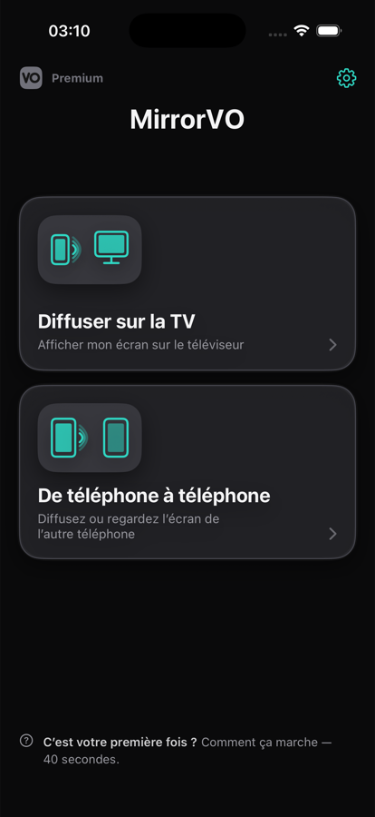
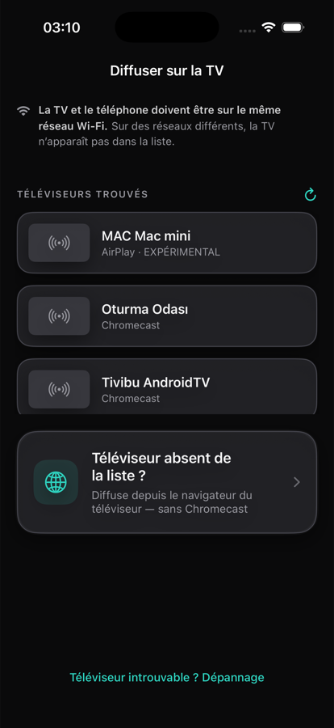
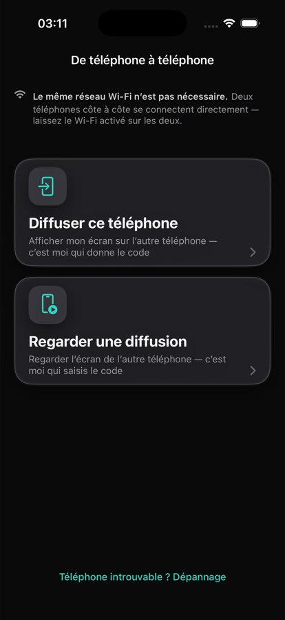

MirrorVO recopie l'écran de votre iPhone ou iPad sur le téléviseur via votre propre Wi-Fi. Si vous avez un Chromecast, choisissez-le dans la liste. Sinon, utilisez le navigateur web du téléviseur : vous saisissez une courte adresse une seule fois.

Ni au lancement, ni avant une diffusion, ni sur l'écran d'achat. Pas non plus en utilisation gratuite.
Rien à créer. Ouvrez l'app et lancez la recopie.
L'étiquette de confidentialité d'Apple sur notre page App Store indique « Données non collectées ». L'image va directement de votre téléphone à la cible ; elle ne passe jamais par nos serveurs.
La plupart des apps de cette catégorie exigent un Chromecast. MirrorVO propose une seconde voie : le navigateur web du téléviseur.
Un Chromecast, ou un téléviseur avec Chromecast intégré : choisissez-le dans la liste et lancez.
MirrorVO affiche une courte adresse, vous la saisissez une fois sur le téléviseur et votre écran apparaît. Testé sur TCL, Philips et Samsung.

Deux téléphones côte à côte se connectent directement ; ils n'ont même pas besoin d'être sur le même réseau Wi-Fi. L'un donne un code, l'autre le saisit.

Mettez votre téléphone et votre téléviseur sur le même réseau.
Sélectionnez-la dans la liste ou passez par le navigateur.
L'image peut mettre 10 à 15 secondes à apparaître sur le téléviseur.
Vous seul pouvez la lancer. iOS ne permet pas aux apps de démarrer d'elles-mêmes une diffusion de l'écran ; la fenêtre système demande votre confirmation à chaque fois.
C'est aussi écrit sur notre page App Store. Nous préférons que vous le sachiez avant de télécharger, pas après.
Quatre niveaux jusqu'à 1080p60, rien de verrouillé. Si le réseau ne suit pas, la qualité baisse d'elle-même d'un cran et remonte dès que possible ; vous n'avez rien à faire.
Türkçe, English, Deutsch, Español, Français, Русский, 日本語, العربية et 22 autres. Si votre téléphone est dans une langue mais que vous voulez l'app dans une autre : Réglages → Langue. Le reste du téléphone n'est pas modifié.